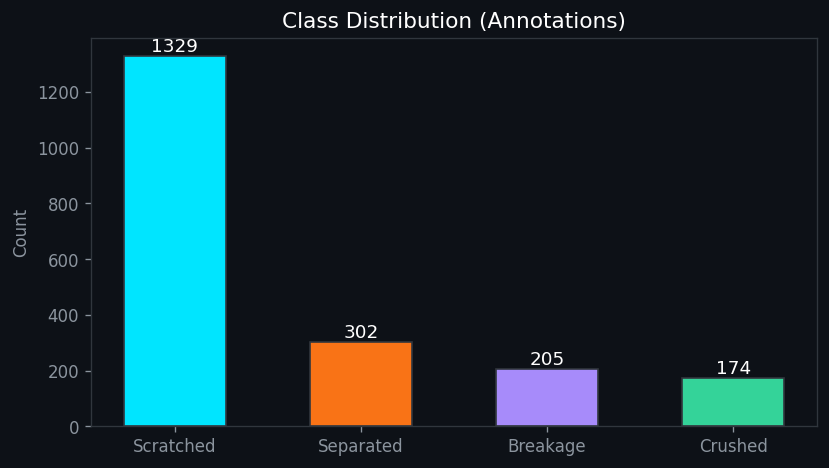
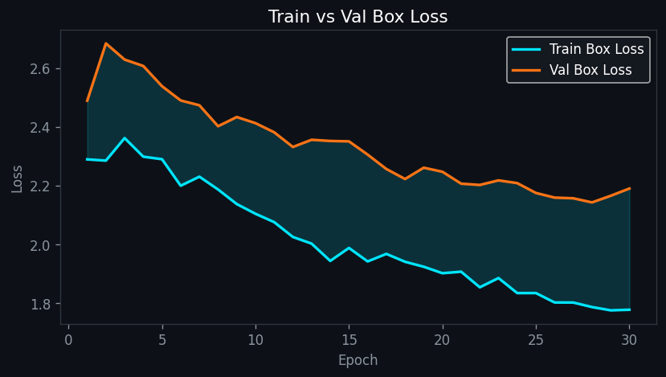

Scratched 92%
Crushed 78%
Breakage 66%
CarCheck
AI 차량 손상 분석 · 보험 처리 비용 비교 · 전문 상담
이은석
→ 방향키로 넘기기
Contents
목차
🔎 배경 & 설계
- 01 프로젝트 추진 배경
- 02 목표 & 구현 범위
- 03 시스템 아키텍처
- 04 보험 할증 계산 로직
- 05 기술 스택
🧠 데이터 & 모델
- 06 데이터 수집 & 활용
- 07 AI 모델 — YOLOv8-seg
- 08 학습 설정 & 분포
- 09 학습 곡선 — mAP
- 10 학습 곡선 — Loss
💡 분석 & 회고
- 11 학습 샘플 & 성능
- 12 학습 전략 회고
- 13 RAG 기반 상담
- 14 트러블슈팅
- 15 향후 계획
01 · Background
프로젝트 추진 배경
😟 기존 방식의 한계
- 보험 처리 시 3년 할증 폭탄을 미리 알기 어려움
- 수리비를 몰라 정비소에 전적으로 의존
- "보험 vs 자비" 손익 계산을 일반인이 못 함
- 보험 약관은 수백 페이지라 확인 곤란
VS
✨ CarCheck의 해결
- AI가 손상 부위·종류를 자동 감지
- 실제 견적 데이터로 수리비 추정
- 할증까지 계산해 손익 즉시 비교
- 약관 근거로 AI 상담까지 원스톱
한 줄 요약 — "사진만 올리면 보험 vs 자비, 뭐가 이득인지 알려주는 AI 상담 서비스"
02 · Goals & Scope
프로젝트 목표 & 구현 범위
🎯 핵심 목표
- 손상 자동 인식 — 사진에서 부위·종류 감지
- 수리비 정량화 — 실제 견적 기반 추정
- 손익 의사결정 — 보험/자비 유불리 계산
- 근거 기반 상담 — 약관 인용 AI 챗봇
🧩 구현 범위
- YOLOv8-seg 손상 세그멘테이션 모델 학습
- SQLite 견적 DB + 할증 계산 로직
- ChromaDB RAG + Gemma2 LLM 상담
- Streamlit 챗봇형 웹앱 (멀티페이지)
03 · Architecture
시스템 아키텍처
📷
→
사진 업로드
Streamlit
🎯
→
손상 감지
YOLOv8-seg
💰
→
수리비 추정
견적 DB
📊
→
할증 계산
손보협회 기준
🤖
RAG 상담
Gemma2
🎯 Vision
무엇이 · 어디가 손상됐나 — 픽셀 단위 마스크로 부위·유형 식별
💰 Data
얼마 드나 — 견적 DB 공임 + 할증 규칙으로 손익 계산
🤖 LLM
어떻게 할까 — 약관 검색(RAG) 기반 맞춤 상담
04 · Surcharge Logic
보험 할증 계산 로직
| 수리비 구간 | 할증률 | 할증 기간 |
|---|---|---|
| 50만원 미만 | 연 10% | 1년 |
| 50만 ~ 150만원 | 연 10% | 2년 |
| 150만원 이상 | 연 15% | 3년 |
연간 인상액 = 연 보험료 × 할증률 |
총 인상액 = 연간 인상액 × 기간
📐 추천 기준
수리비 ≤ 총 인상액 → 자비 처리
수리비 > 총 인상액 → 보험 처리
수리비 > 총 인상액 → 보험 처리
💡 예시
연 보험료 60만원, 수리비 45만원→ 50만 미만 → 1년 10% → 6만원 인상
→ 자비 45만 vs 보험 6만 → 보험 처리 유리
⚠️ 주의
손보협회 공개 기준의 근사치. 실제 할증은 보험사·특약·사고 이력에 따라 달라짐.
05 · Tech Stack
기술 스택
🎯 AI / Vision
YOLOv8n-segSegmentation
Ultralytics학습·추론
PyTorch딥러닝
OpenCV이미지
🤖 LLM / RAG
Ollama · Gemma2로컬
Groq · LLaMA 3.3배포
Gemini 2.5비상 fallback
ChromaDB벡터 DB
MiniLM한국어 임베딩
LangChainRAG
🗄️ Backend / Data
Python서비스
SQLite견적 DB
Pandas·NumPy처리
🖥️ Frontend / Infra
Streamlit웹앱
HF Spaces배포
HF Hub모델 저장
Colab T4학습 GPU
M1 MPS로컬
06 · Data
데이터 수집 & 활용
- AI Hub — 차량 파손 이미지 데이터 공공 개방 데이터셋. 9,744장 이미지 + 세그멘테이션 라벨 → YOLO 학습용 (4개 손상 클래스)
- 삼성화재 개인용 자동차보험 약관 2025.08.16 개정 · 276p → RAG knowledge 컬렉션, 보상·자기부담금 근거
- 손해보험협회 할인·할증 기준 2024년 공식 기준 → 할증률 계산 로직 + RAG 근거
- 실제 수리 견적서 데이터 SQLite estimates.db. 부위별 평균 공임 → 수리비 추정
⚠️ 모든 답변에 출처(약관 페이지)를 명시해 신뢰도 확보
07 · AI Model
AI 모델 — YOLOv8-seg
왜 Segmentation 인가?
단순 박스(Detection)가 아닌 픽셀 단위 마스크로 감지 → 손상 면적·형태를 파악해 수리 규모 추정에 유리.
모델YOLOv8n-seg
imgsz640
batch16
OptimAdamW
4개 손상 클래스 → 작업 매핑
- Scratched 긁힘 → 도장
- Breakage 파손 → 교환
- Separated 분리 → 탈착
- Crushed 찌그러짐 → 판금
감지된 손상 유형 → 작업(도장/교환/판금/탈착) → 견적 DB에서 부위별 공임 조회
08 · Training Setup
학습 설정 & 클래스 분포

| 항목 | 값 |
|---|---|
| 모델 | YOLOv8n-seg |
| Epochs | 100 (Colab) |
| Batch / imgsz | 16 / 640 |
| Optimizer | AdamW |
| Device | Tesla T4 GPU |
⚠️ 클래스 불균형
Scratched가 65% 편중 → 소수 클래스(Crushed) 검출이 약함. 데이터 확장으로 해소 예정.
09 · Metrics
학습 곡선 — mAP50

👀 관찰
Box·Mask mAP50 모두 30 epoch 내내 우상향, 아직 정체되지 않음.
🔍 해석
곡선이 계속 오르는 중 = 학습 여력 존재. 데이터·epoch을 늘리면 개선 여지.
⚠️ 주의
그래프는 로컬 30 epoch(≈0.15). Colab 100 epoch에서 0.239 달성.
10 · Loss
학습 곡선 — Loss & 과적합


👀 관찰
Box·Seg·Cls loss 모두 안정적으로 감소 → 학습 정상 수렴.
🔍 해석
Train·Val 격차가 크지 않음 → 30 epoch 시점엔 심한 과적합 아님.
⚠️ 주의
소량 데이터 × 100 epoch 조합에선 이 격차가 벌어질 위험 (다음 회고).
11 · Sample & Score
학습 샘플 & 성능 요약

0.239
mAP50 (Box)
0.212
mAP50 (Mask)
👀 실제 감지 샘플
실제 차량 이미지에 세그멘테이션 마스크가 부위별로 입혀진 학습 배치. Scratched는 안정적으로 감지됨.
🔍 성능 요약
100 epoch · T4 GPU · 약 1.5시간. 소수 클래스는 데이터 확장으로 개선 예정.
12 · RAG + LLM
RAG 기반 보험 상담
🔎 Retrieval (검색)
- ChromaDB 2개 컬렉션
- repair_cases — 유사 견적 사례
- knowledge — 약관·할증 규정
- 임베딩: multilingual-MiniLM
🤖 Generation (생성)
- 로컬 — Gemma2 · Ollama
- 배포 — Groq API · LLaMA 3.3
- 비상 — Gemini 2.5-flash fallback
- 약관 인용 → 환각 감소
- 자동차 보험 외 질문 거절
분석 결과 + 대화 히스토리 + 검색된 약관을 system prompt에 주입 → 근거 기반 맞춤 상담
13 · Troubleshooting
트러블슈팅
🧠 학습 & 개발
🐛 Colab 세션 끊김으로 학습 유실
→✅ epoch별 체크포인트 콜백 자동 복구
🐛 클래스 불균형 — Scratched 65% 편중, 소수 클래스 미검출
→✅ AI Hub 데이터로 소수 클래스 15~18배 확장
🐛 Streamlit 이미지 유실 — session_state PIL 객체 깨짐
→✅ bytes로 직렬화해 재실행에도 유지
🚀 HF Spaces 배포
🐛 Ollama는 로컬 전용 — 클라우드 서버에 LLM 없음
→✅ Groq API 교체 · 4개 모델 fallback 체인
🐛 HF Spaces가
→best.pt push 거부 — Git LFS도 차단✅ HF Hub 모델 저장소 분리 업로드 · 앱 시작 시 자동 다운로드
14 · Retrospective
학습 전략 회고 — 왜 960장 × 100 epoch?
| 방식 | 총 학습량 (image-views) | 다양성 | 과적합 |
|---|---|---|---|
| 960장 × 100 ep | 96,000 | 낮음 | 위험 ↑ |
| 9,744장 × 10 ep | 97,440 | 높음 | 낮음 |
총 연산량은 거의 동일 — 그러나 데이터 다양성이 일반화를 가른다
👀 사실
초기 확보 데이터가 960장뿐 → 파이프라인 검증용 baseline으로 100 epoch 학습(0.239).
🔍 통찰
"적은 데이터를 여러 번"보다 "많은 데이터를 골고루"가 일반화에 유리. 총 연산량은 같다.
✅ 결론
데이터 10배 확장(→9,744장)했으니 epoch은 100→10이 정석. Colab 할당량 재개 후 재학습 예정.
15 · Next
향후 계획
🎯 모델 고도화
- 9,744장 풀 재학습 (10 epoch) → mAP 0.40+ 목표
- 소수 클래스 검출력 강화
- 차종·연식별 수리비 정밀화
🚀 서비스 확장
- ✅ HF Spaces 배포 완료 — Groq + Gemini fallback
- 실제 보험사 API 연동 검토
- 모바일 촬영 가이드 UX
Vision + Data + LLM 결합으로 운전자의 실질적 의사결정을 돕는 방향으로 발전
감사합니다
CarCheck — AI 차량 손상 분석 & 보험 상담 서비스 · 이은석
Scratched 92% Crushed 78% Breakage 66% CarCheck AI 차량 손상 분석 · 보험 처리 비용 비교 · 전문 상담 이은석 → 방향키로 넘기기